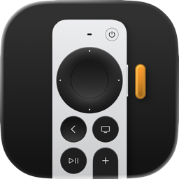

macOS menu-bar app / Siri Remote
The one app that turns your remote into the best AI inputer.
VibeRemote maps every Siri Remote button to the keys AI agents need. Hold Siri to dictate, slide to place the caret, click to send — and steer Codex, Claude or any text field from across the room.
- Type
- Menu-bar utility
- Platform
- macOS 27 · Apple Silicon
- Hardware
- Siri Remote — 1st gen black glass, 2nd & 3rd gen aluminum
- Works with
- Codex, Claude, and any text field on your Mac
- License
- Free · MIT, source on GitHub
Built for talking
to agents.
-
01
Your remote becomes a microphone
Hold Siri and speak. VibeRemote decodes the remote’s audio into its own VibeRemote input device, so your dictation app hears it — and keeps your dictation key held until the last word lands.
-
02
Buttons that speak agent
Back deletes a word, TV adds a new line, Power sends, Play/Pause opens the skill picker —
$in Codex,/in Claude. The keys you actually use with agents, one press away. -
03
A caret under your thumb
Slide across the touch surface and a small caret follows through your prompt, snapping row by row. Click to place it, or let it settle on its own. No mouse, no reaching.
-
04
Lists without the menus
Volume Up starts a bullet list or indents an item; Volume Down steps back out. It drives the editor’s own commands, so formatting and undo stay intact.
-
05
Advanced Menu at the caret
A glass palette opens right where you are typing: stop the current task, clear the input, undo, redo, or send with
⌘↩. Tap to keep it open, hold to peek. -
06
Every Siri Remote
Black glass or aluminum, detected automatically with a profile for each. Pair both at once — every remote keeps its own mapping.
-
07
Quiet in the menu bar
Connection and battery at a glance. Auto Disconnect lets the remote sleep after 5, 15 or 30 idle minutes, and Settings shows your exact remote in 3D, built from CAD.
-
08
Set up once, then forget it
An illustrated guide walks through permissions and your Siri shortcut. Approve the helper once and the microphone starts without password prompts. Signed updates arrive automatically.
Fig. 02 — Advanced Menu
Lean back.
Keep the conversation going.
- Clear input
- Skill
- Stop task
- Redo
- Close
- Undo
Every button
has a job.
| Siri | Hold to dictate — your shortcut stays held while you talk | Space |
|---|---|---|
| Clickpad ring | Arrow keys, repeating while held | ←↑→↓ |
| Clickpad slide | Move a text caret; click the center to place it | caret |
| Back | Delete the previous word; hold to keep going | ⌥⌫ |
| TV | New line without sending | ⇧↩ |
| Play/Pause | Skill picker for the focused app | $ / |
| Power | Send | ↩ |
| Mute | Open Advanced Menu | menu |
| Volume + | Start a bullet list, or indent | ⇥ |
| Volume − | Outdent, or end the list | ⇧⇥ |
| Siri | Hold to dictate — your shortcut stays held while you talk | Space |
|---|---|---|
| Surface edges | Arrow keys; a quick swipe sends one arrow | ←↑→↓ |
| Surface slide | Move a text caret; press to place it | caret |
| Surface press | Enter | ↩ |
| Menu | Delete the previous word; hold to keep going | ⌥⌫ |
| TV | New line; hold for modifier shortcuts | ⇧↩ |
| Play/Pause | Open Advanced Menu | menu |
| Volume + | Start a bullet list, or indent | ⇥ |
| Volume − | Outdent, or end the list | ⇧⇥ |
Siri is the one button you choose: Space, Right ⌘ or Right ⌥ for your dictation app.
Four steps
to the couch.
-
01
Download
Get the latest release from GitHub, unzip it and move VibeRemote.app to
/Applications. -
02
Pair your remote
Open System Settings › Bluetooth, then hold Back (or Menu) and Volume Up near your Mac until the remote appears.
-
03
Follow the guide
Allow Bluetooth, Input Monitoring and Accessibility, tour the buttons, and pick your Siri shortcut.
-
04
Turn on the microphone
Approve the VibeRemote helper in Login Items & Extensions. Voice capture uses Apple’s PacketLogger, part of Additional Tools for Xcode.
Experimental software built on Bluetooth and HID behavior that can change between macOS releases.

Pick up the remote.
Free, open source, and made for the way you already talk to agents.